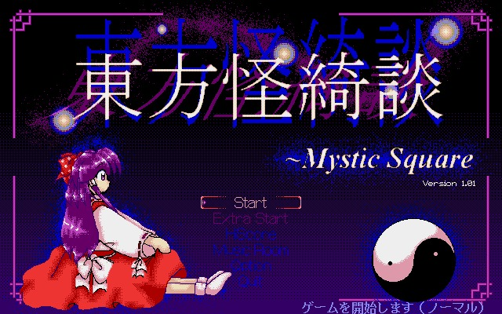
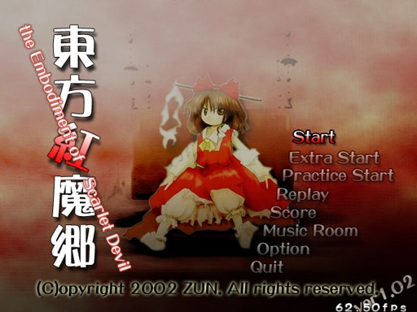
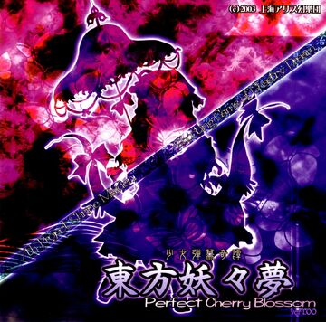
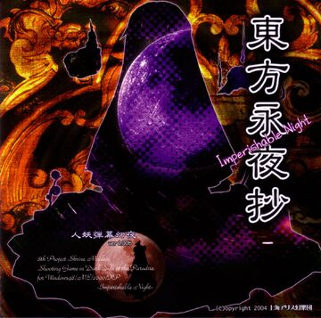
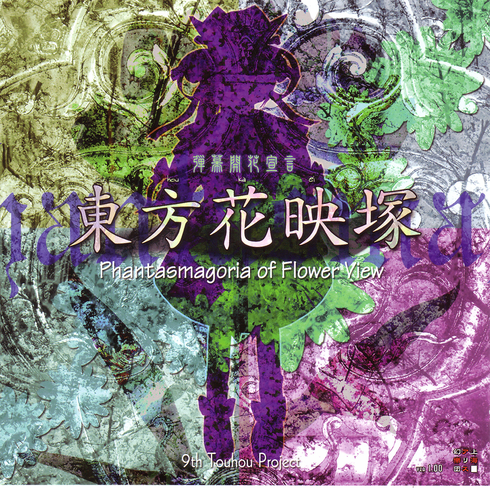
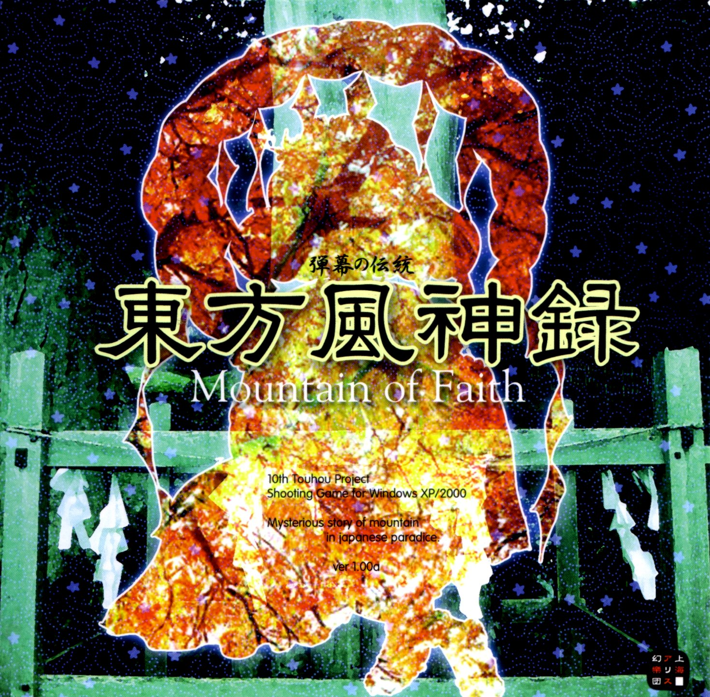
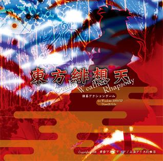
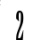
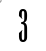

Links pa descargar los 28 touhous XD+
Touhou 1-5 ~ PCx98

Touhou Kaikidan
Extraña historia romántica
~ Mystic Square (東方怪綺談 ～ Mystic Square) es el quinto juego del Proyecto Touhou y es el último juego para el PC-98 japonés,
lanzado en 1998. Es el primer juego en el que aparece Alice Margatroid y presenta cuatro seleccionables. personajes: Reimu Hakurei,
Marisa Kirisame, Mima y Yuuka Kazami.
Touhou 6 ~ Embodiment of Scarlet Devilt

The Embodiment of Scarlet Devil sigue los pasos de los anteriores títulos de PC-98
y Seihou Project en cuanto a las mecánica base, pero haciendo ciertos cambios claves,
siendo el mayor de éstos la implementación del sistema de Spell Cards. El ritmo de los
patrones de balas también se vio reducido considerablemente, pero se mantuvieron algunos
aspectos como los "patrones rápidos" de PC-98, dándole a The Embodiment of Scarlet Devil
la reputación de poseer una mayor dificultad que otros juegos posteriores, en los cuales
este tipo de patrones serían casi totalmente removidos.
Touhou 7 ~ Perfect Cherry Blossom

東方妖々夢～ Perfect Cherry Blossom (romanizado: Touhou Youyoumu ～ Perfect Cherry Blossom, Lit: "Sueño Embrujante
del Este ～ Cerezo Florecido Perfectamente") Es la séptima entrega de la serie de juegos Touhou, y la segunda creada para Windows,
presenta grandes innovaciones, especialmente gráficas frente a su predecesor. El número de personajes jugables se incrementa a tres
con la inclusión de Sakuya Izayoi, cambiando sustancialmente su historia y final. El aspecto musical es mejorado con respecto a su
antecesor. Los controles siguen siendo los mismos que en Embodimient of Scarlet Devil.
Touhou 8 ~ Imperishable Night

東方永夜抄 ～ Imperishable Night (romanizado: Touhou Eiyashou ～ Imperishable Night, Lit:"Vignette de la Noche Eterna
del Este ～ Noche Imperecible") es el octavo juego oficial de Touhou. Se lanzó el 15 de agosto de 2004. Destacan la mejora gráfica y musical
respecto a los juegos anteriores, además de cambios en el sistema de juego y la gran cantidad de personajes a elegir en comparacion a juegos
anteriores de la saga, llegando a los 8 personajes, que pueden colaborar con la nueva opción de juego en equipo.
Touhou 9 ~ Phantasmagoria of Flower View

東方花映塚 ～ Phantasmagoria of Flower View (romanizado: Touhou Kaeidtzuka ～ Phantasmagoria of Flower View, Lit: "Monte Oriental
con vista a las flores ～ Fantasmagoría de la vista de las flores") es un juego de disparos vertical danmaku , y el noveno juego oficial en la serie
Touhou . Es muy diferente a los juegos Touhou lanzados anteriormente ya que es un juego del tipo VS, donde dos personajes pelean en las mismas condiciones.
En ese aspecto, el juego recuerda al juego Touhou Phantasmagoria of Dim. Dream para la PC-98, y a los diseños de Twinkle Star para las consolas Neo Geo/Dreamcast/PS2.
Touhou 10 ~ Mountain of Faitht

Touhou Fuujinroku Crónicas del Dios del Viento ~ Mountain of FaithMontaña de la Fe(東方風神録 ～ Mountain of Faith) es el décimo juego
oficial de la serie de juegos Touhou.
Como todos los templos Shintō, el descuidado Templo Hakurei de Gensokyo fue originalmente creado para albergar al dios local; debido a que toda clase de youkai pasan
el tiempo en el templo, los humanos de la región lo han dejado de visitar y la fe que le tenían al dios del templo empezó a decaer, disminuyendo su fuerza e influencia.
Reimu Hakurei y Marisa Kirisame comienzan una aventura para alcanzar y llegar a la misteriosa Montaña Youkai con la esperanza de encontrar una solución a este problema.
Touhou 10.5 ~ Scarlet Weather Rhapsody

東方緋想天 ～ Scarlet Weather Rhapsody (romanizado: Touhou Hisouten ～ Scarlet Weather Rhapsody, Lit: "Percepciones Escarlata de los Cielos del Este ～
Rapsodia del Clima Escarlata") cronológicamente tiene lugar un año después de Mountain of Faith (TH10). Por lo tanto se le denomina TH10.5.
Touhou 11 ~ Subterranean Anim

東方地霊殿 ～ Subterranean Animism (romanizado: Touhou Chireiden ～ Subterranean Animism, Lit: "Palacio del Este de los Espritus de la
Tierra ～ Animismo Subterráneo) El décimo primer Juego de la saga Touhou (Sin contar los juegos de Pelea y Shoot the Bullet) presentando varias innovaciones y
cambios retomando en algunos aspectos partes de sus antecesores entre lo que destaca del juego:
Touhou 12 ~ Undefined Fantastic Object

東方星蓮船 ～ Undefined Fantastic Object (romanizado: Touhou Seirensen ～ Undefined Fantastic Object, Lit: "Barco "Loto-Estrella" del
Este ～ Objeto Fantastico Indefinido") es el juego número 12 de la saga de Touhou, conocido comúnmente con la sigla UFO. Regresan 3 personajes para ser
seleccionadas en esta entrega siendo Reimu Hakurei, Marisa Kirisame y Sanae Kochiya, cada una con dos tipos de armas.
 